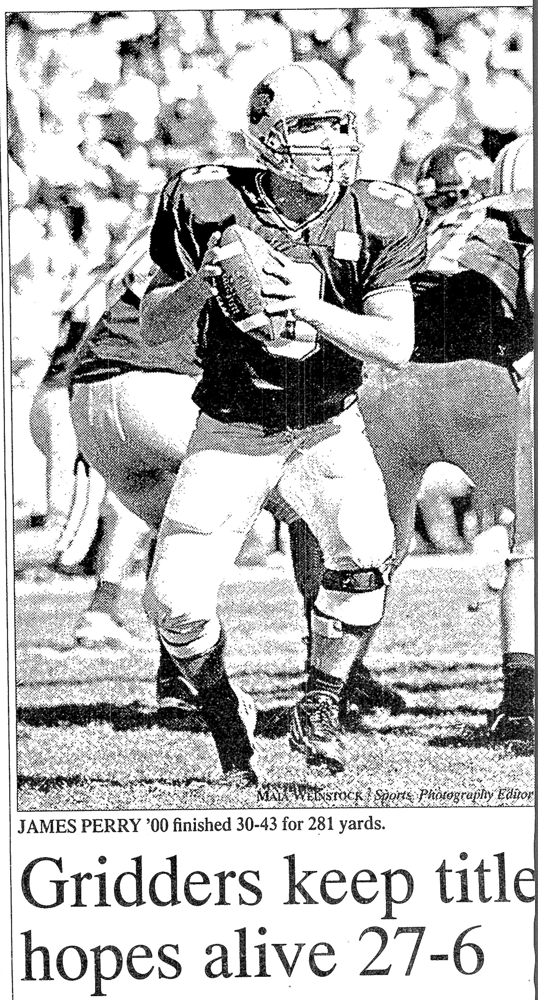
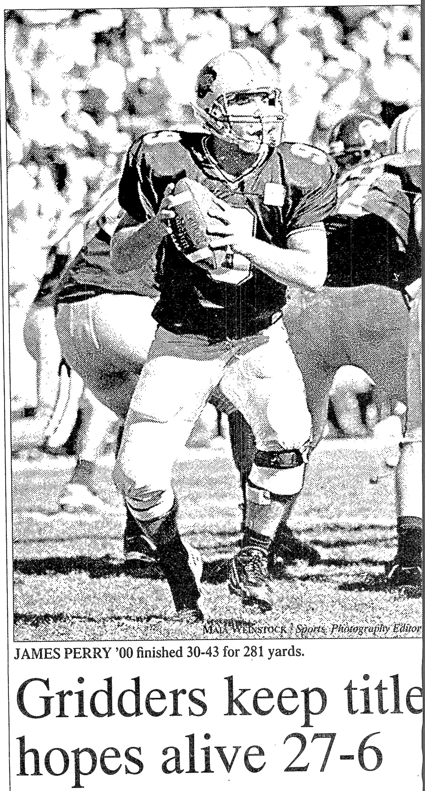
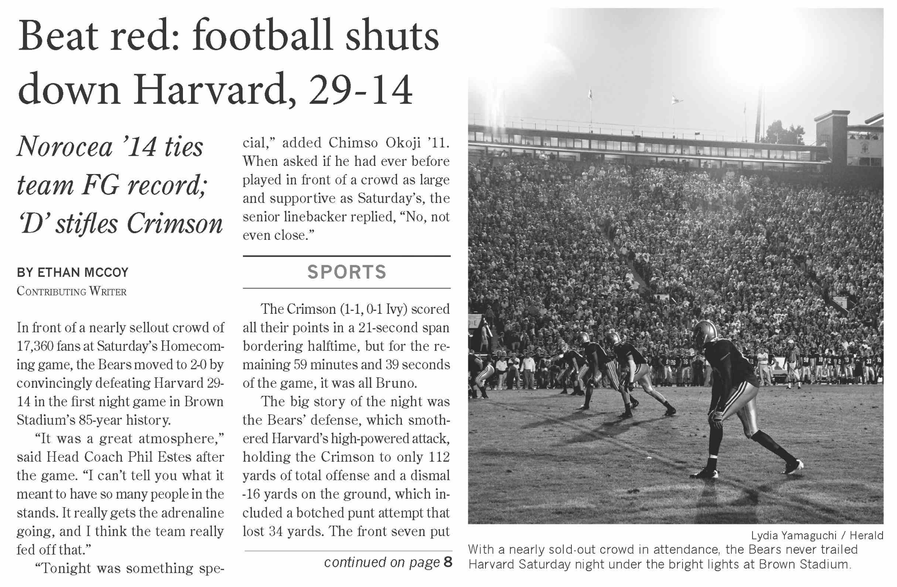
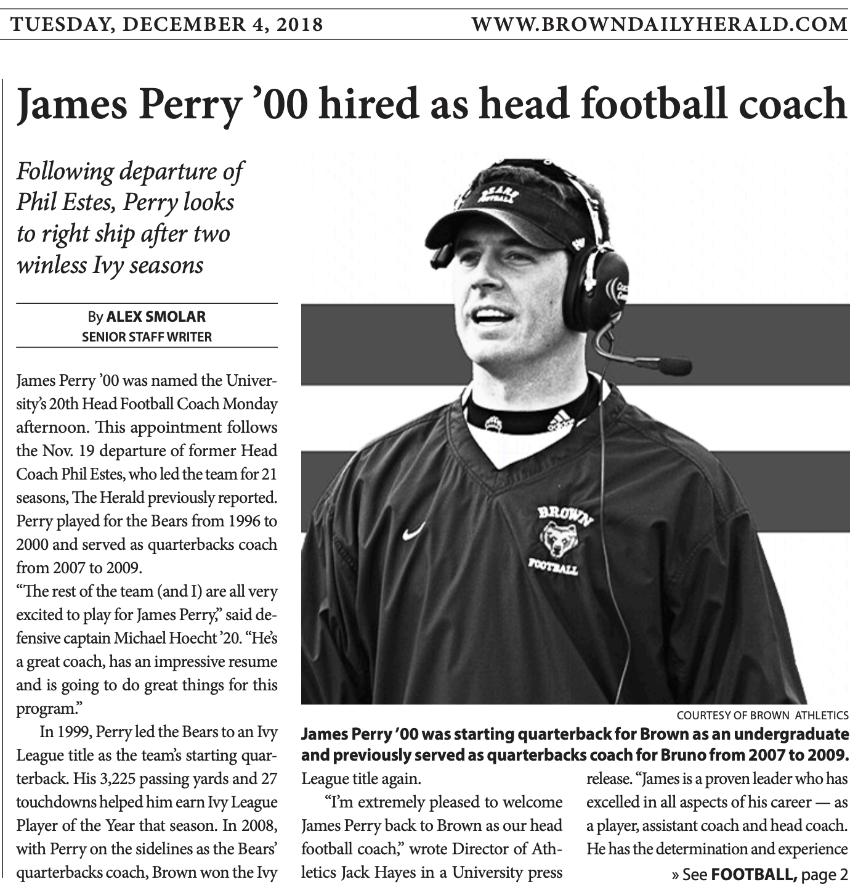
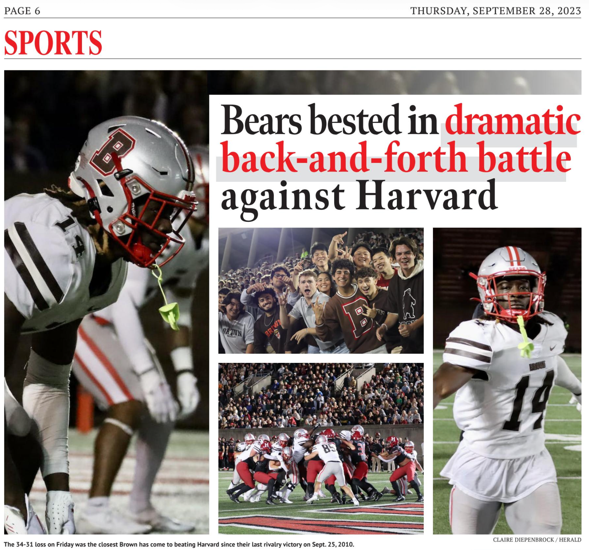
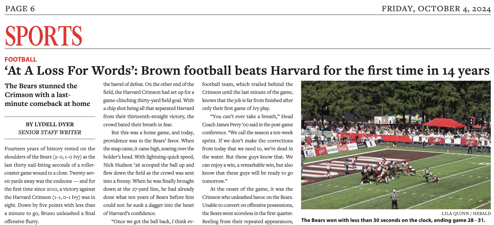
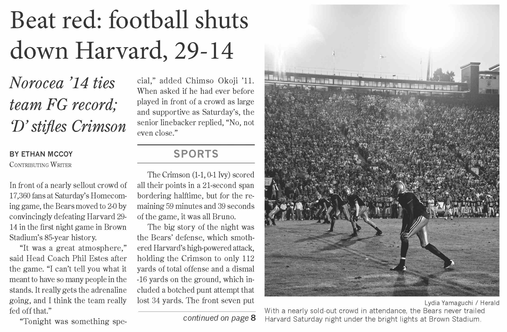
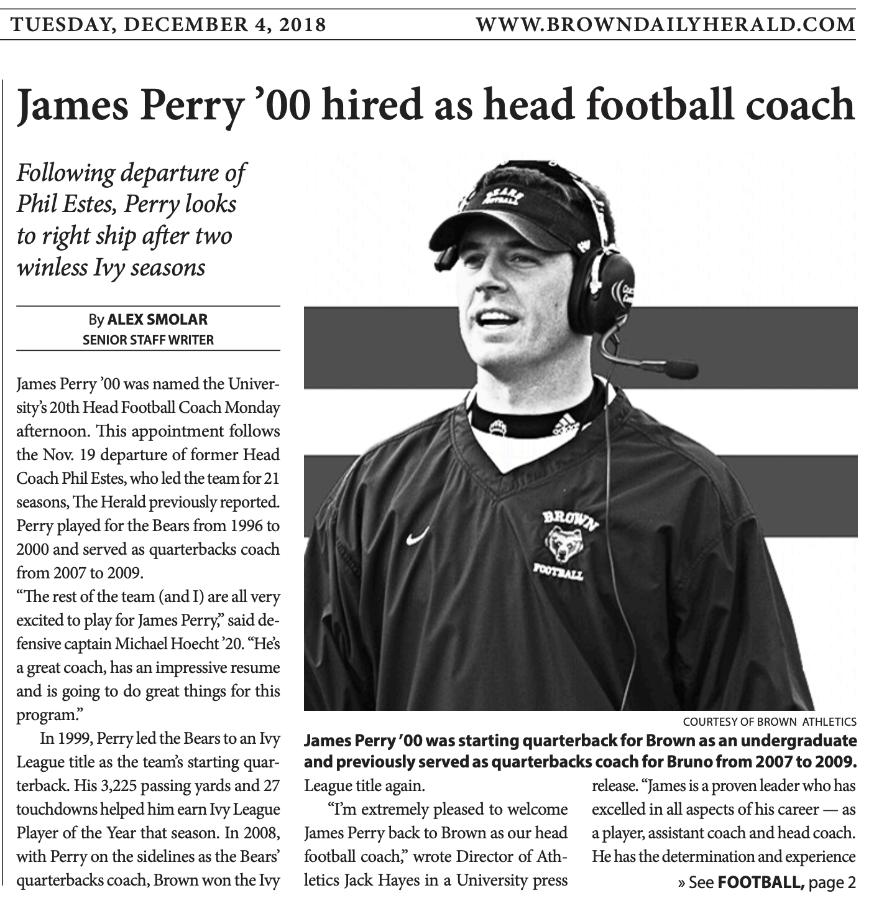
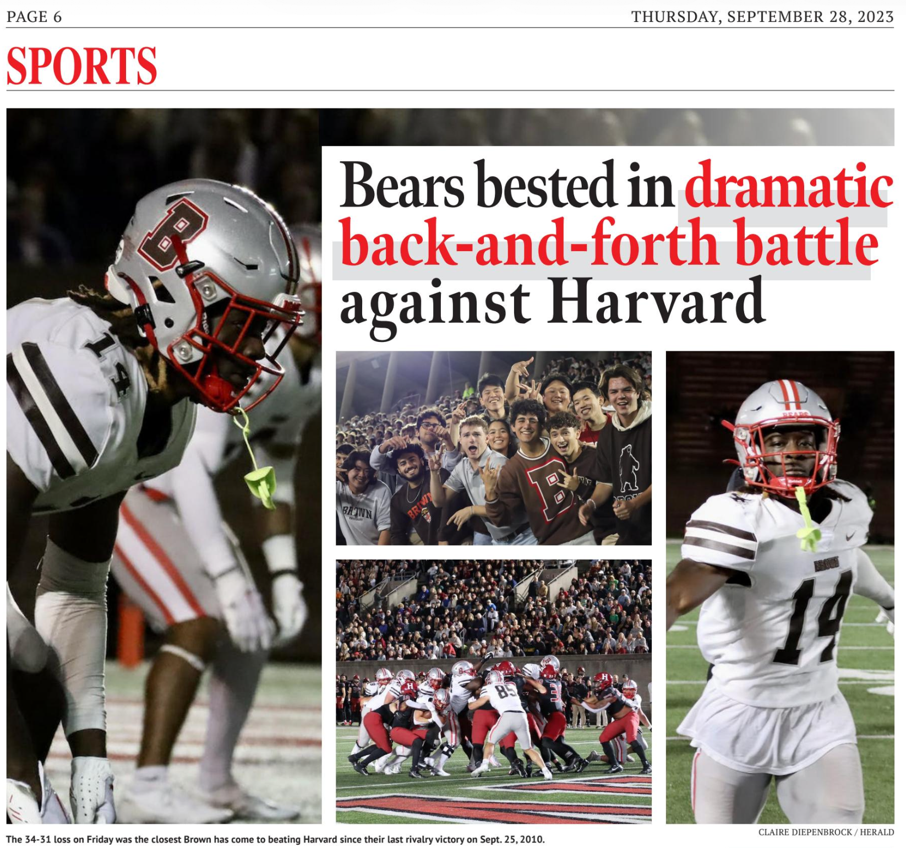
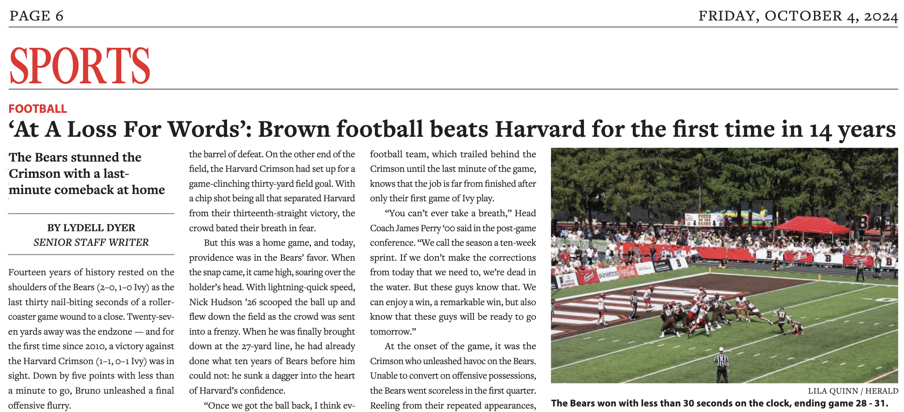

Brown vs. Harvard over the years
The (fairly uncompetetive) history of a storied rivalry
Reporting and web design by
↓
The (fairly uncompetetive) history of a storied rivalry
1924 Harvard vs. Brown — Photo Courtesy of the Brown Daily Herald
This Saturday, the Brown football team will travel to Harvard
Stadium, seeking their first road win against Harvard of the
century. As Brunonians travel the MBTA or I-95 to follow the
Bears to Boston, they might wonder how Brown has performed
historically in this rivalry matchup. The answer? Poorly.
Brown’s epic comeback win last season was their
first win in 14
years. This year, they’ll attempt to make it the first
back-to-back win in 26 years. Still, there is reason for hope.
Brown dominated Georgetown last weekend with an electric offense
and suffocating defense in a 46-0 shutout. It was Brown’s
largest margin of victory since 1949, and the 18th largest
margin of victory in the history of the program (tied for the
largest is a 70-0 drubbing of Providence High School in 1886).
So, after a historically strong first game, on Saturday at 6:00
PM the Bears will try to turn the page to a new age of
competitive football. The Crimson would much prefer to begin
another decade of dominance. While the excitement of last year
will be hard to match, most Brunonian fans would likely be happy
just to head back to Providence with a win. They’ll be relying
on head coach James Perry and the entire football squad to make
it happen.
Below is an in-depth breakdown of the entire history of the
Brown–Harvard rivalry, from 1893 to the present.
1952 Harvard vs. Brown — Photo Courtesy of the Brown Daily Herald
Brown total points
Harvard total points
Longest Brown win streak (1955-59)
Biggest win (1995)
Biggest loss (1893)
Away record
Overall record
Home record
Harvard–Brown football games (second most frequent Brown opponent [128 vs. Yale])

1995 Harvard vs. Brown — Media by Mike DiBianco
2007 Harvard vs. Brown — Media by Ashley Hess
 

 






